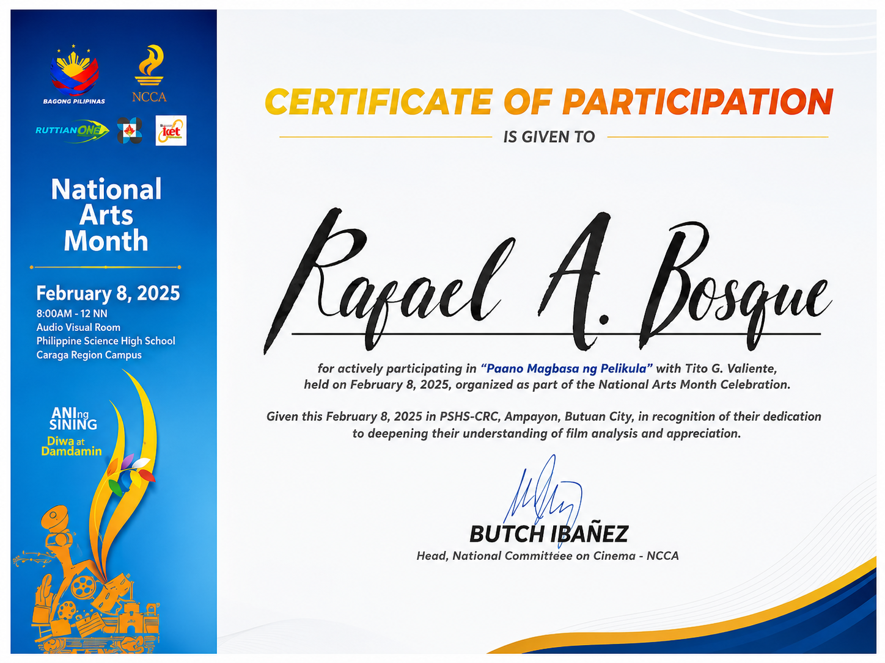
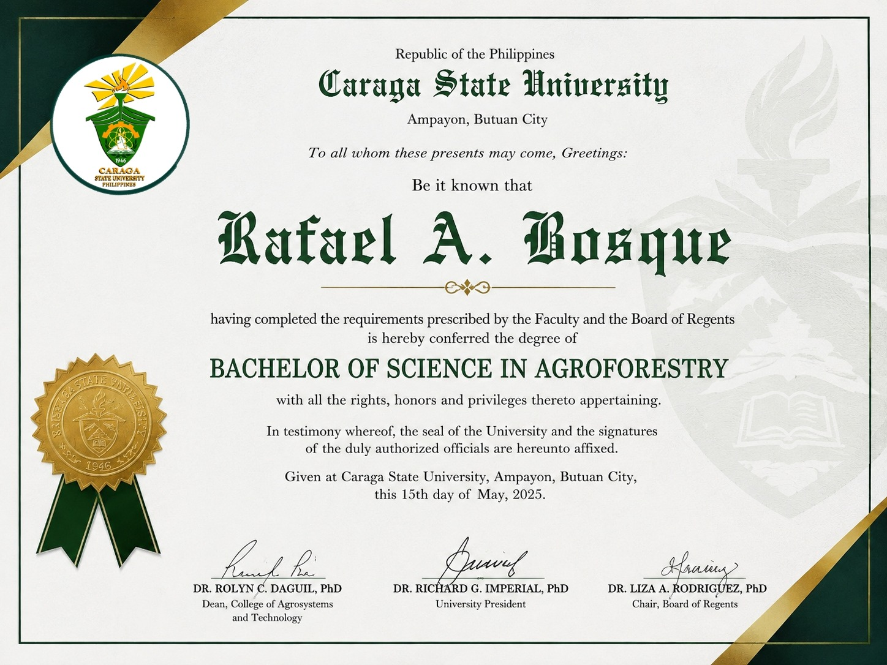
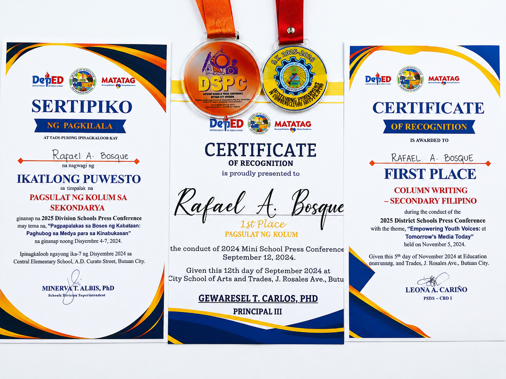

Multimedia & Video
Certificate / training credential
I am a responsible and creative person who enjoys writing, using social media, editing videos, and creating content. I also enjoy learning about and working with nature and the environment through my studies in Agroforestry.
Contact Me View PortfolioCombining communication, digital content, writing, editing, and an Agroforestry background to create useful and engaging work.
A short professional introduction.
I am a responsible and creative person who enjoys writing, using social media, editing videos, and creating content. My experience in journalism and serving as an Editor-in-Chief helped me develop my skills in writing, editing, communication, and working with others.
I also enjoy learning new software and digital tools that allow me to turn ideas into creative and engaging content. I take initiative, pay attention to details, and am willing to learn from new experiences.
Social Media Management
Content Creation & Writing
Video Editing
Environmental & Agroforestry Work
Academic background.
Academic background in agroforestry, nature, and environmental work.
Selected experience and responsibilities.
Practical exposure related to agroforestry and environmental work.
Created and edited video content and developed digital media skills.
Worked on writing, editing, content creation, communication, and teamwork.
Digital, communication, and professional skills.
Areas that represent my creative and professional work.
Articles, journals, narratives, editing, and school publication work developed through journalism experience.
Video editing, multimedia work, content creation, and digital communication.
Content planning, page management, public notices, audience engagement, and online promotion.
Academic and practical work connected to nature, environmental resources, and agroforestry.
Selected certificates and recognition materials.

Certificate / training credential

Portfolio sample/mock credential for demonstration purposes.

Awards and recognition from journalism activities.